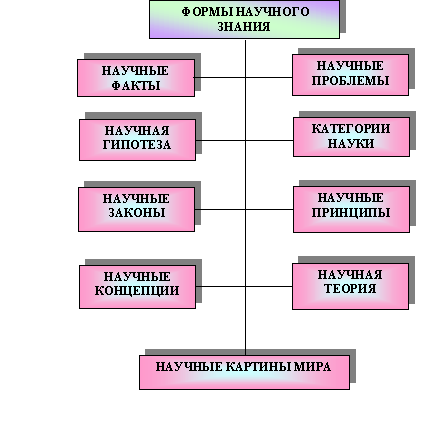

|
1. Понятие
методологии и метода |
Важно различать такие понятия, как методология и метод.
Методология - это учение о структуре, логической организации, методах и средствах деятельности.
Методология естествознания - учение о принципах построения, формах и способах естественнонаучного познания. Так, например, методологическое значение имеют в естествознании законы сохранения. При любых исследованиях, теоретических построениях они должны обязательно учитываться.
Метод - это совокупность приемов или операций практической или теоретической деятельности. Метод можно также охарактеризовать как форму теоретического и практического освоения действительности, исходящего из закономерностей поведения изучаемого объекта. Ф. Бэкон [1] сравнивал правильный научный метод со светильником, освещающим путнику дорогу в темноте.
Методы научного познания включают так называемые всеобщие методы, т.е. общечеловеческие приемы мышления, общенаучные методы и методы конкретных наук. Методы могут быть классифицированы и по соотношению эмпирического знания (т.е. знания полученного в результате опыта, опытного знания) и знания теоретического, суть которого - познание сущности явлений, их внутренних связей. Классификация методов научного познания представлена на рис. 1,2.
Рис.1
Следует иметь в виду, что каждая отрасль естествознания наряду с общенаучными применяет свои конкретно-научные, специальные методы, обусловленные сущностью объекта исследования. Однако зачастую методы, характерные для какой-либо конкретной науки применяются и в других науках. Это происходит потому, что объекты исследования этих наук подчиняются также и законам данной науки. Например, физические и химические методы исследования применяются в биологии на том основании, что объекты биологического исследования включают в себя в том или ином виде физические и химические формы движения материи и, следовательно, подчиняются физическим и химическим законам (вспомним «лестницу Кекуле», рассмотренную нами в первой лекции).
Всеобщих методов в истории познания - два: диалектический и метафизический. Это общефилософские методы.
Диалектический метод - это метод
познания действительности в ее
противоречивости, целостности и
развитии.
Метафизический [2]
метод - метод, противоположный
диалектическому, рассматривающий явления
вне их взаимной связи и развития.
С середины 19-го века метафизический метод все больше и больше вытеснялся из естествознания диалектическим методом.
2. Методы научного познания
2.1. Общенаучные методы
Соотношение общенаучных методов также можно представить в виде схемы (рис.2).
Рис.2
Анализ - мысленное или реальное
разложение объекта на составляющие его
части.
Синтез - объединение познанных в результате
анализа элементов в единое целое.
Обобщение - процесс мысленного перехода от единичного к о общему, от менее общего, к более общему, например: переход от суждения «этот металл проводит электричество» к суждению «все металлы проводят электричество», от суждения : «механическая форма энергии превращается в тепловую» к суждению «всякая форма энергии превращается в тепловую».
Абстрагирование (идеализация) - мысленное внесение определенных изменений в изучаемый объект в соответствии с целями исследования. В результате идеализации из рассмотрения могут быть исключены некоторые свойства, признаки объектов, которые не являются существенными для данного исследования. Пример такой идеализации в механике - материальная точка, т.е. точка, обладающая массой, но лишенная всяких размеров. Таким же абстрактным (идеальным) объектом является абсолютно твердое тело.
Индукция - процесс выведения общего положения из наблюдения ряда частных единичных фактов, т.е. познание от частного к общему. На практике чаще всего применяется неполная индукция, которая предполагает вывод о всех объектах множества на основании познания лишь части объектов. Неполная индукция, основанная на экспериментальных исследованиях и включающая теоретическое обоснование называется научной индукцией. Выводы такой индукции часто носят вероятностный характер. Это рискованный, но творческий метод. При строгой постановке эксперимента, логической последовательности и строгости выводов она способна давать достоверное заключение. По словам известного французского физика Луи де Бройля, научная индукция является истинным источником действительно научного прогресса.
Дедукция - процесс аналитического рассуждения от общего к частному или менее общему. Она тесно связана с обобщением. Если исходные общие положения являются установленной научной истиной, то метом дедукции всегда будет получен истинный вывод. Особенно большое значение дедуктивный метод имеет в математике. Математики оперируют математическими абстракциями и строят свои рассуждения на общих положениях. Эти общие положения применяются к решению частных, конкретных задач.
В истории естествознания были попытки абсолютизировать значение в науке индуктивного метода (Ф. Бэкон) или дедуктивного метода (Р. Декарт), придать им универсальное значение. Однако эти методы не могут применяться как обособленные, изолированные друг от друга. каждый из них используется на определенном этапе процесса познания.
Аналогия - вероятное, правдоподобное заключение о сходстве двух предметов или явлений в каком-либо признаке, на основании установленного их сходства в других признаках. Аналогия с простым позволяет понять более сложное. Так, по аналогии с искусственным отбором лучших пород домашних животных Ч. Дарвин открыл закон естественного отбора в животном и растительном мире.
Моделирование - воспроизведение свойств объекта познания на специально устроенном его аналоге - модели. Модели могут быть реальными (материальными), например, модели самолетов, макеты зданий. фотографии, протезы, куклы и т.п. и идеальными (абстрактными), создаваемые средствами языка (как естественного человеческого языка, так и специальных языков, например, языком математики. В этом случае мы имеем математическую модель. Обычно это система уравнений, описывающая взаимосвязи в изучаемой системе.
Исторический метод подразумевает воспроизведение истории изучаемого объекта во всей своей многогранности, с учетом всех деталей и случайностей. Логический метод - это, по сути, логическое воспроизведение истории изучаемого объекта. При этом история эта освобождается от всего случайного, несущественного, т.е. это как бы тот же исторический метод, но освобожденный от его исторической формы.
Классификация - распределение тех или иных объектов по классам (отделам, разрядам) в зависимости от их общих признаков, фиксирующее закономерные связи между классами объектов в единой системе конкретной отрасли знания. Становление каждой науки связано с созданием классификаций изучаемых объектов, явлений.
Классификация - это процесс упорядочивания информации. В процессе изучения новых объектов в отношении каждого такого объекта делается вывод: принадлежит ли он к уже установленным классификационным группам. В некоторых случаях при этом обнаруживается необходимость перестройки системы классификации. Существует специальная теория классификации - таксономия. Она рассматривает принципы классификации и систематизации сложноорганизованных областей действительности, имеющих обычно иерархическое строение (органический мир, объекты географии, геологии и т.п.).
Одной из первых классификаций в естествознании явилась классификация растительного и животного мира выдающегося шведского натуралиста Карла Линнея (1707-1778). Для представителей живой природы он установил определенную градацию: класс, отряд, род, вид, вариация.
Методы эмпирического и теоретического познания схематично представлены на рис.3.
Рис.3
Наблюдение - целенаправленное, организованное восприятие предметов и явлений. Научные наблюдения проводятся для сбора фактов, укрепляющих или опровергающих ту или иную гипотезу и являющихся основой для определенных теоретических обобщений.
Эксперимент - способ исследования, отличающийся от наблюдения активным характером. Это наблюдение в специальных контролируемых условиях. Эксперимент позволяет, во-первых, изолировать исследуемый объект от влияния побочных несущественных для него явлений. Во-вторых, в ходе эксперимента многократно воспроизводится ход процесса. В третьих, эксперимент позволяет планомерно изменять само протекание изучаемого процесса и состояния объекта изучения.
Измерение - это материальный процесс сравнения какой-либо величины с эталоном, единицей измерения. Число, выражающее отношение измеряемой величины к эталону, называется числовым значением этой величины.
В современной науке учитывается принцип относительности свойств объекта к средствам наблюдения, эксперимента и измерения. Так, например, если изучать свойства света, изучая его прохождение через решетку, он будет проявлять свои волновые свойства. Если же эксперимент и измерения будут направлены на изучение фотоэффекта, будет проявляться корпускулярная природа света (как потока частиц - фотонов).
К формам научного знания относят проблемы, научные факты, гипотезы, теории, идеи, принципы, категории и законы (см. рис.4).

Рис. 4
Факт, как явление действительности, становится научным фактом, если он прошел строгую проверку на истинность. Факты - это наиболее надежные аргументы как для доказательства, так и для опровержения каких-либо теоретических утверждений. И.П. Павлов называл факты «воздухом ученого». Однако при этом надо брать не отдельные факты, а всю, без исключения, совокупность фактов, относящихся к рассматриваемому вопросу. В противном случае возникает подозрение, что факты подобраны произвольно.
Научные проблемы - это осознанные вопросы, для ответа на которые имеющихся знаний недостаточно. Ее можно определить и как «знание о незнании».
Научная гипотеза - такое предположительное знание, истинность или ложность которого еще не доказано, но которое выдвигается не произвольно, а при соблюдении ряда требований, к которым относятся следующие.
1. Отсутствие противоречий. Основные положение предлагаемой гипотезы не должны противоречить известным и проверенным фактам. (При этом следует учитывать, что бывают и ложные факты, которые сами нуждаются в проверке).
2. Соответствие новой гипотезы надежно установленным теориям. Так, после открытия закона сохранения и превращения энергии все новые предложения о создании «вечного двигателя» более не рассматриваются.
3. Доступность выдвигаемой гипотезы экспериментальной проверке, хотя бы в принципе (см. ниже - принцип верифицируемости).
4. Максимальная простота гипотезы.
Категории науки - это наиболее общие понятия теории, характеризующие существенные свойства объекта теории, предметов и явлений объективного мира. Например, важнейшими категориями являются материя, пространство, время, движение, причинность, качество, количество, причинность и. т.п.
Законы науки отражают существенные связи явлений в форме теоретических утверждений. Принципы и законы выражаются через соотношение двух и более категорий.
Научные принципы - наиболее общие и важные фундаментальные положения теории. Научные принципы играют роль исходных, первичных посылок и закладываются в фундамент создаваемых теорий. Содержание принципов раскрываются в совокупности законов и категорий.
Научные концепции - наиболее общие и важные фундаментальные положения теорий.
Научная теория - это систематизированные знания в их совокупности. Научные теории объясняют множество накопленных научных фактов и описывают определенный фрагмент реальности (например, электрические явления, механическое движение, превращение веществ, эволюцию видов и т.п.) посредством системы законов.
Главное отличие теории от гипотезы - достоверность, доказанность. сам термин теория имеет множество смыслов. [3] Теория в строго научном смысле - это система уже подтвержденного знания, всесторонне раскрывающая структуру, функционирование и развитие изучаемого объекта, взаимоотношение всех его элементов, сторон и теорий.
Научная теория должна выполнять две важнейшие функции, первой из которых является объяснение фактов, а вторая - предсказание новых, еще неизвестных фактов и характеризующих их закономерностей.
Научная теория - одна из наиболее устойчивых форм научного знания, но и они претерпевают изменения вслед за накоплением новых фактов. Когда изменения затрагивают фундаментальные принципы теории, происходит переход к новым принципам, а , следовательно, к новой теории. Изменения же в наиболее общих теориях, приводят к качественным изменениям всей системы теоретического знания. в результате чего происходят глобальные естественнонаучные революции и меняется научная картина мира.
Научная картина мира - это система научных теорий, описывающая реальность. Подробнее о научных картинах мира, их эволюции будет сказано в следующей лекции.
Определив формы научного знания и методы научного познания, мы можем схематично представить весь процесс научного познания в виде некоторой схемы (см. рис. 5).
Рис.6
В настоящее время, в силу ряда объективных причин в мире оказались весьма сильны антинаучные тенденции, представляющие собой заявку на понятное всем, четкое миропонимание, отличное от того, которое дает классическое естествознание. При этом в общественном сознании размывается грань между наукой и псевдонаукой, наукой и мистикой. В этих условиях важно знать критерии разграничения научных и псевдонаучных идей. На схеме рис. 6 даны принципы, справедливые для научных теорий, научного знания, которые отличают научное знание от псевдонаучного.
Рис.6
Контрольные вопросы
1. Чем отличается методология от метода?
2. Перечислите общенаучные методы
3. Что такое эмпирические методы?
4. Перечислите и объясните эмпирические
методы научного познания.
5. Что такое эксперимент?
6. Что такое измерение?
7. Перечислите и объясните теоретические
методы.
8. Что относится к формам научного знания?
9. Какие факты могут считаться научными?
10. Каким требованиям должна удовлетворять
научная гипотеза?
11. Что такое научная категория?
12. Что такое научная теория, чем она
отличается от гипотезы?
13. Что такое индукция и дедукция? Приведите
примеры.
14. Что такое анализ? Синтез?
15. Что такое идеализация?
16. Что такое моделирование?
17. Перечислите критерии научности знания?
18. Объясните принцип верификации.
19. Объясните принцип фальсификации.
20. Опишите процесс научного познания.
1. Грядовой Д.И. Концепции современного
естествознания. Структурный курс основ
естествознания. - М.: Учпедгиз, 1999.
2. Карпенков С.Х. Концепции современного
естествознания. Практикум. - М.: Культура и
спорт. Изд. объединение «ЮНИТИ», 1998.
3. Солопов Е.Ф. Концепции современного
естествознания. - М.: Владос, 1998.
4. Концепции современного естествознания. \под
ред. С.И. Самыгина.- Ростов н/Д: «Феникс», 1999.
5.
http://www.philosophy.nsc.ru/STUDY/BIBLIOTEC/PHILOSOPHY_OF_SCIENCE/HOLTON/lgenauka1.htm
[1] Ф. Бэкон () - английский философ и естествоиспытатель
[2] Слово «метафизика» (<греч. после физики) имеет несколько значений, в частности, философское учение о наиболее общих основах бытия, в том числе и существования человека, выраженное в отвлеченных,не выводимых непосредственно из опытоа, понятиях
[3] Теорией часто называют и гипотезу, и любую концепцию или совокупность взглядов, даже заведомо ложных (например, расистская теория, теория)
Права на распространение и использование курса принадлежат
Уфимскому Государственному Авиационному
Техническому Университету